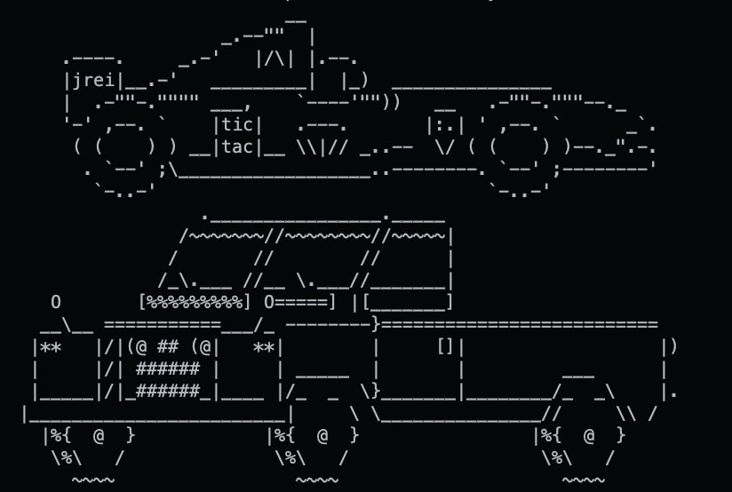

ASCII art from game

Code example
A game developed in my Game Engine Architecture class. Built from scratch using C++ and a version of the raylib-cpp library. This game is from AS4 where we were tasked with creating a custom AD Hoc Game where I chose to make a game similar to Mario Kart. Initially I wanted the cars to detect the plane/surface they were driving on to determine the speed effects given to the respective car (speed boosts/speed reduction) depending on the object/color ran into. Instead, I made it so the vehicles detect collision with a tire (speed boost) or a cone (speed reduction) to make the game a little more interesting.